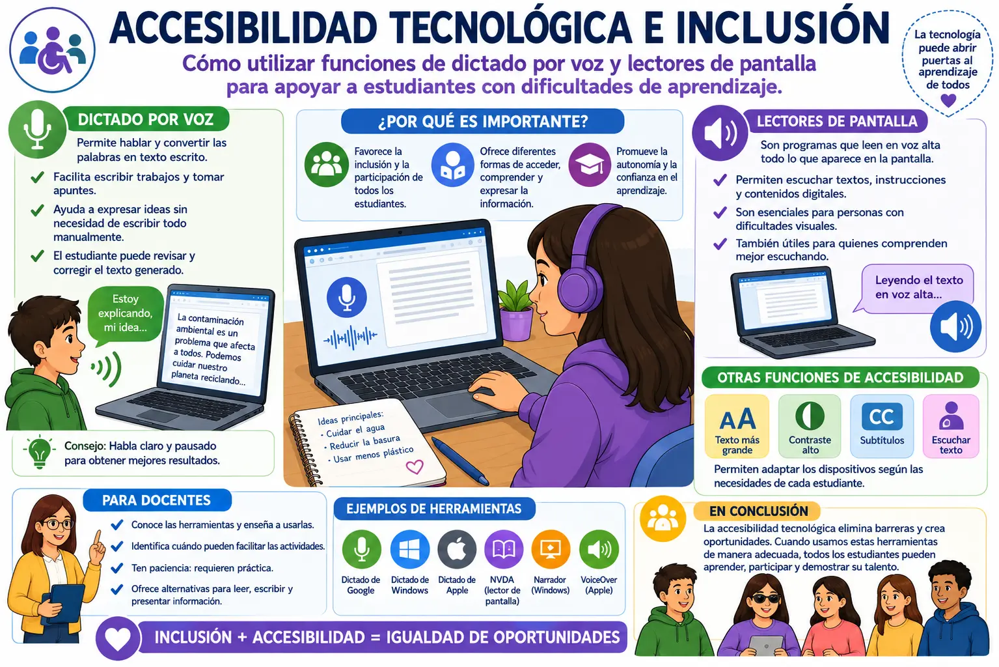

Accesibilidad tecnológica e inclusión
La accesibilidad tecnológica consiste en utilizar herramientas y recursos digitales que permitan que todas las personas puedan aprender y participar, teniendo en cuenta sus diferentes necesidades. En el ámbito educativo, la tecnología puede ser de gran ayuda para los estudiantes que presentan dificultades para leer, escribir, concentrarse o comprender determinados contenidos. De esta manera, las herramientas digitales pueden complementar las estrategias utilizadas por los docentes.
Una de las funciones más útiles es el dictado por voz. Esta herramienta permite hablar frente a un dispositivo y convertir las palabras en texto escrito. Puede ser utilizada para realizar trabajos, tomar apuntes o expresar ideas sin necesidad de escribir todo manualmente. Para algunos estudiantes, esto facilita la realización de actividades y les permite concentrarse más en lo que quieren expresar.
El dictado por voz también puede ser útil para desarrollar trabajos escolares de una manera diferente. Por ejemplo, un estudiante puede explicar sus ideas hablando y después revisar el texto generado por el dispositivo. Es importante corregir los errores que pueda cometer el sistema, especialmente cuando existen palabras difíciles de reconocer. Así, la herramienta sirve como apoyo, pero el estudiante sigue participando en la elaboración y revisión de su trabajo.
Otra herramienta importante son los lectores de pantalla. Estos programas pueden leer en voz alta diferentes elementos que aparecen en un computador, teléfono o tableta. De esta manera, una persona puede escuchar textos, instrucciones y otros contenidos digitales. Los lectores de pantalla son especialmente importantes para personas con dificultades visuales, aunque también pueden ser útiles para estudiantes que comprenden mejor la información cuando la escuchan.
La accesibilidad también puede incluir otras funciones, como aumentar el tamaño de las letras, utilizar subtítulos, modificar el contraste de la pantalla o escuchar textos digitales. Estas opciones permiten adaptar los dispositivos de acuerdo con las necesidades de cada estudiante. No todas las personas aprenden de la misma manera, por lo que contar con diferentes formas de presentar la información puede facilitar el aprendizaje.
Para que estas herramientas sean realmente útiles, los docentes deben conocer su funcionamiento y enseñar a los estudiantes a utilizarlas correctamente. No se trata de utilizar la tecnología solamente porque está disponible, sino de identificar cuándo puede facilitar una actividad. También es importante tener paciencia durante el proceso de aprendizaje, ya que algunas herramientas requieren práctica antes de poder utilizarlas con facilidad.
La accesibilidad tecnológica favorece la inclusión porque permite que más estudiantes puedan participar en las actividades escolares. Cuando una institución ofrece diferentes alternativas para leer, escribir, escuchar o presentar información, se reducen algunas barreras que pueden dificultar el aprendizaje. Además, utilizar estas herramientas ayuda a crear un ambiente educativo donde se tienen en cuenta las necesidades y capacidades de cada persona.
En conclusión, las herramientas de accesibilidad tecnológica pueden convertirse en un apoyo importante dentro de la educación. El dictado por voz, los lectores de pantalla y otras funciones permiten encontrar diferentes formas de realizar las actividades y acceder a la información. Utilizadas de manera adecuada, estas tecnologías contribuyen a una educación más inclusiva, en la que todos los estudiantes tienen mayores oportunidades de participar y demostrar lo que han aprendido.
